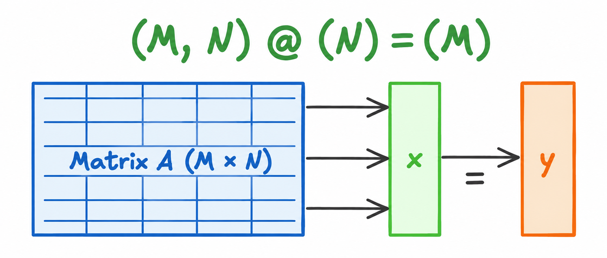
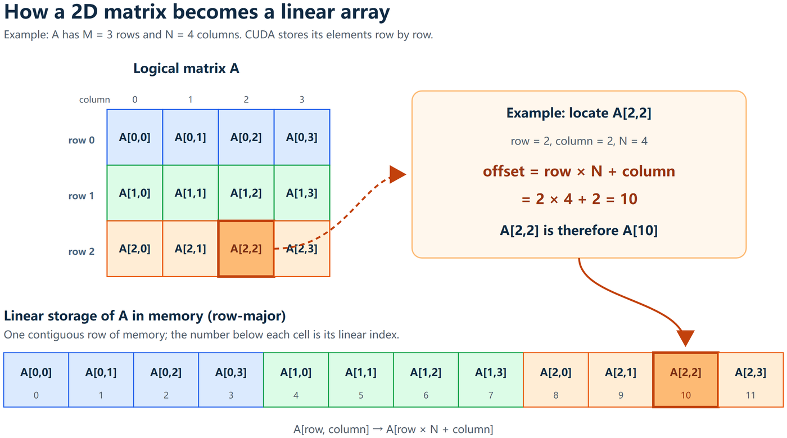
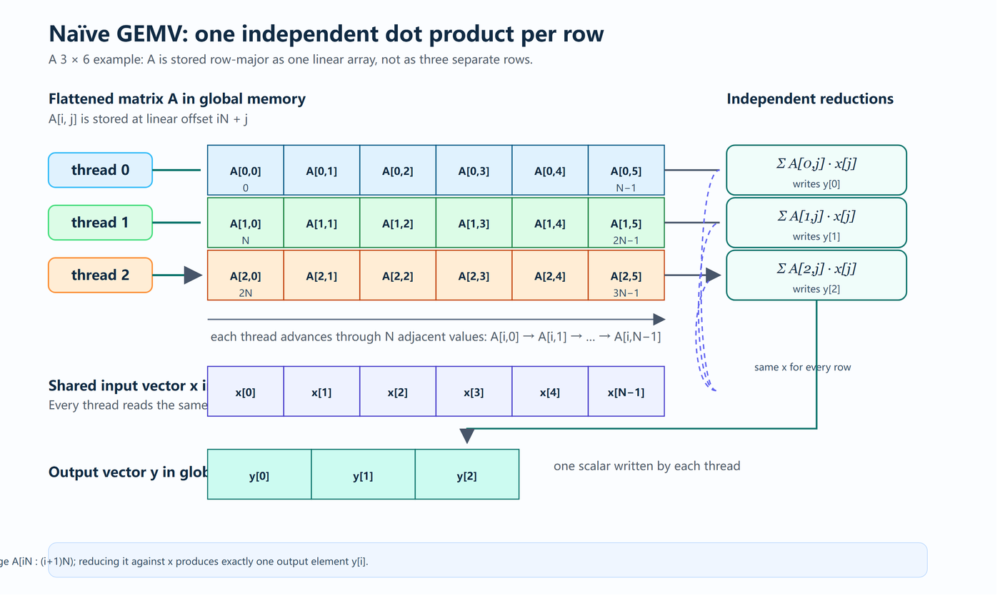
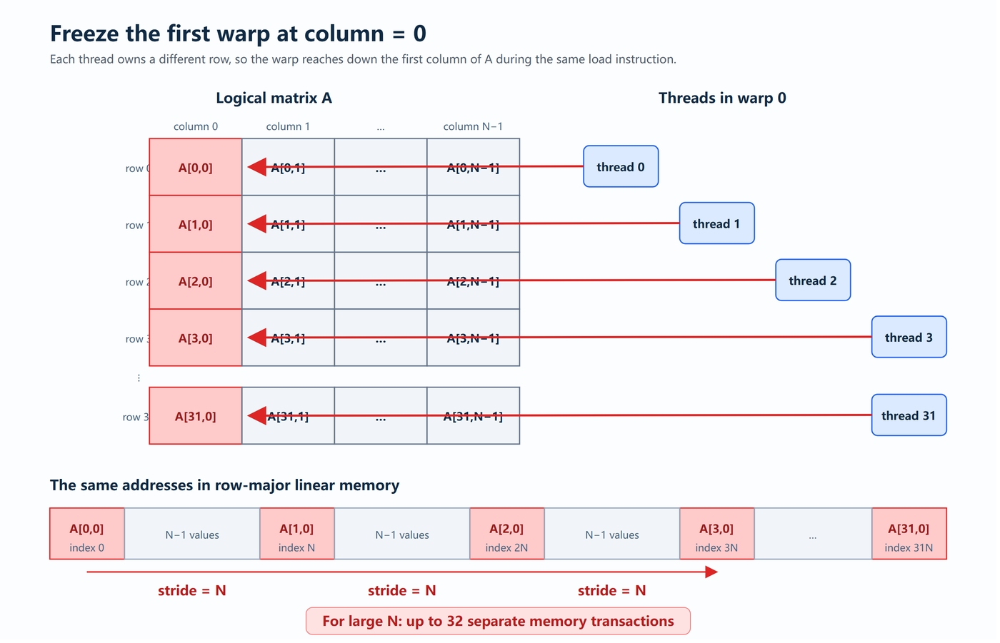
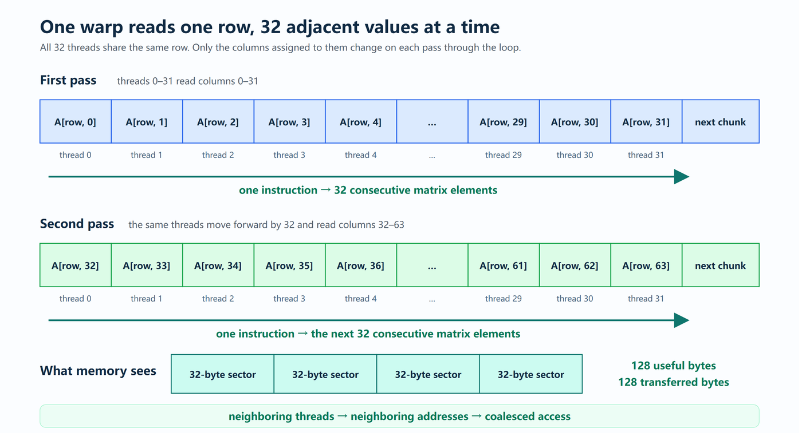

GEMV（矩阵向量乘法）看起来是个再简单不过的并行问题：每个输出元素就是矩阵一行与输入向量的点积。但这篇文章走完了从朴素kernel到高效kernel的完整路程，也把CUDA优化里最核心的那个概念讲透了：线程级的连续访问不等于warp级的连续访问。
作者先算清GEMV的算力强度只有约0.5 FLOPs/byte、注定内存受限，再指出朴素映射会让有效算力强度跌到0.0625 FLOPs/byte，最后用一个改动把带宽利用拉回正轨。
GEMV是GEneral Matrix Vector multiplication（通用矩阵向量乘法）的缩写，说白了就是把一个矩阵和一个向量相乘。
这份工作记录从一个朴素kernel开始。写完之后我们先研究它，搞清楚它为什么性能不行；找出瓶颈之后，再动手实现一个把所有问题都解决掉的、真正高效的kernel。
形式化地说，我们的目标是计算：y（M×1）= A（M×N）· x（N×1）。

假设所有操作数都用FP32，每个元素占4字节。我们同时假设内存行为是理想的：输入向量x只加载一次并留在缓存里，而A的每个元素都恰好被读取一次。
把这一次GEMV涉及的数据移动量列出来，就是下面这张表（读取矩阵A：MN个元素、4MN字节；读取输入向量x：N个元素、4N字节；写出输出向量y：M个元素、4M字节；合计MN+N+M个元素、4(MN+N+M) 字节）。
对A的每一行，这个点积要做N次乘法与N−1次加法，因此精确的计算开销是M(N+(N−1)) = M(2N−1) = 2MN−M次浮点运算。
算力强度是浮点工作量与内存流量的比值：AI(M,N) = 浮点运算数 / 传输字节数 = M(2N−1) / [4(MN+N+M)] = (2MN−M) / [4(MN+N+M)]，单位是FLOPs/byte。
当M和N都很大时，MN主导M与N，于是AI ≈ 2MN/4MN = 1/2 = 0.5 FLOPs/byte。
这意味着每从内存读2个字节，我们才做1次浮点运算。这么低的算力强度，让GEMV在绝大多数现代处理器上都是内存受限的：处理器读取A的速度，通常会在浮点单元被喂饱之前就成为性能上限。按roofline模型，可达到的最高性能受P ≤ min(P(峰值), AI × B(内存带宽)) 约束，其中P(峰值) 是峰值算力、B(内存带宽) 是内存带宽。由于AI约为0.5 FLOPs/byte，一台内存带宽为B的处理器跑GEMV时，最多只能维持约0.5B FLOPs/s：除非矩阵已经驻留在更快的存储层级里。
虽然我们一直把A当作二维矩阵来推理，但它在内存里占的是一段连续的线性区域。CUDA按行存放元素，所以位于（行、列）的元素，其偏移量是offset(A(row,column)) = row × N + column；等价地写作A(row,column) = A[row × N + column]。举个例子，当N = 4时，元素A(2,2) 位于2 × 4 + 2 = 10，也就是A(2,2) = A[10]。

GEMV的分解特别简单：每一个输出元素，都是A的某一行与同一个输入向量x的点积。对第i行（i取值0到M−1），有y(i) = Σ(j=0到N−1) A(i,j)·x(j)。
这M个点积彼此独立，所以我们可以把第i行分配给一个线程：该线程读取A的第i行，把其中的元素与x相乘、累加乘积，再写出y(i)。

__global__ void naive_gemv_kernel(
float* A,
float* x,
float* y,
int M,
int N
) {
int row = blockDim.x * blockIdx.x + threadIdx.x;
if (row < M) {
float sum = 0.0;
for (int column = 0; column < N; ++column) {
sum = A[row * N + column] * x[column];
}
y[row] = sum;
}
}
void launch_kernel(
float* __restrict__ A,
float* __restrict__ x,
float* __restrict__ y,
int M,
int N
) {
dim3 block_size(1024);
dim3 grid_size(ceil_division(M, block_size.x));
naive_gemv_kernel<<<grid_size, block_size>>>(A, x, y, M, N);
}到这里，我们写出了一段并行计算矩阵向量乘法的程序。既然是并行的，那肯定能省下大量时间，听起来很棒、很完美对吧？可惜并不是。
回想一下前面算算力强度时讨论过的内容：FLOPs与内存。我们的计算也许确实很高效，但事实证明我们忽略了一个不起眼的细节，正是它让优化前功尽弃。这个细节就是内存访问模式。
现在正好介绍一下warp的概念。warp是NVIDIA GPU上最基础的执行单元（AMD喜欢叫它wavefront），每个warp恰好包含32个线程；所有NVIDIA架构（截至本文写作时的Ampere、Hopper、Blackwell）都是如此。
这里最关键的一点是：GPU只有一次性读写一整块较宽的内存，才能达到高内存带宽。
看看这对刚写的kernel意味着什么。考虑第一个block里的第一个warp：由于blockIdx.x = 0，线程0到31被分配到了第0到第31行。现在把它们全部冻结在循环的第一次迭代上，也就是column = 0的时候：
Thread 0: row = 0, accesses A[0 * N + 0] = A[0]
Thread 1: row = 1, accesses A[1 * N + 0] = A[N]
Thread 2: row = 2, accesses A[2 * N + 0] = A[2N]
Thread 3: row = 3, accesses A[3 * N + 0] = A[3N]
...
Thread 31: row = 31, accesses A[31 * N + 0] = A[31N]对第一个warp来说，线程编号同时也是它的行号。在任意一列上，线程请求的线性下标就是index = threadIdx.x * N + column。当column = 0时，它变成threadIdx.x * N，于是得到上面那串0, N, 2N, …, 31N。
看出问题了吗？这32个相邻线程读取的并不是32个相邻元素，任意两个线程之间都隔了整整一行，也就是内存里恰好N个浮点数。

以N = 8192这个常见情形为例：线程0读A[0]，线程1却读A[8192]，中间隔了8192个浮点数、也就是32768字节；线程2又在32768字节之外，整个warp都是这个规律。
为什么这很糟？因为全局内存是按对齐的块来取数的。当一个warp里的32个线程请求连续的FP32值时，它们的请求可以被合并成很少几次内存事务；但这里请求彼此相距太远，N一大，每个线程可能都要单独占用一次事务。于是一条载入指令可能逼GPU做多达32次内存事务，尽管每个线程只想要一个4字节的值。
而且这不是一次性的惩罚。同样的模式会在column = 1、column = 2一直到矩阵的每一列上反复出现：第0列取到0, N, 2N, 3N…；第1列取到1, N+1, 2N+1, 3N+1…；第2列取到2, N+2, 2N+2, 3N+2…。
所以尽管每个单独的线程确实在自己的行里顺序前进，整个warp在每一次迭代上做的都是非连续、带跨步的访问。这就是这个看起来人畜无害的kernel为什么浪费了如此多内存带宽的原因。
我们其实可以把这件事联系回文章开头算过的算力强度。数据搬运花费的时间大约是T(内存) ≈ 传输字节数 / 内存带宽。这个式子简单得几乎让人难受，但它说明的道理很直接：如果两个kernel做同样多的运算，其中一个却迫使GPU传输更多字节，那它就更慢。而GEMV本来就已经内存受限，几乎没有多余的计算可以用来掩盖这部分额外时间。
前面我们算出理想算力强度是0.5 FLOPs/byte，这已经很低了。它还意味着：内存每送来1个字节，GPU只拿到半次浮点运算可做；换句话说，每做1次浮点运算，大约需要2字节的内存流量。现代GPU的算力远快于它们从全局内存取数的速度，所以算力强度这么低的kernel，会远在达到峰值算力之前就撞上带宽天花板。
但我们的计算里藏着一个重要的词：理想。它假设GEMV要4个字节，就只有这有用的4个字节被计入。而现实中的内存事务并不是以一个浮点数的粒度工作的，GPU取的是对齐的内存块；如果取回来的块里剩下的部分没被这个warp用上，那些字节照样穿过了内存系统，只是我们没从它们身上得到任何计算。
我们用内存事务效率来描述这种浪费：η(A) = A的有用字节数 / 为A实际传输的字节数。在完美合并的矩阵读取下，η(A) 可以接近1，warp几乎用上了它取回的所有东西。而我们刚写的朴素kernel得到的是：η(A) = (32 × 4) / (32 × 32) = 128 / 1024 = 1/8 = 12.5%。
这意味着，读取A的4MN个有用字节，可能迫使GPU在内存系统里传输4MN / η(A) 个字节。如果对x保持同样的理想缓存假设，并注意到对y连续元素的写入是合并的，那么有效算力强度就变成AI(有效) = M(2N−1) / [4MN/η(A) + 4N + 4M]。当M和N很大时，矩阵那一项压倒其它所有项，于是AI(有效) ≈ 2MN / (4MN/η(A)) = η(A)/2。
现在能看清访问模式是怎么让一个本就内存受限的算法雪上加霜的：合并访问（η(A) ≈ 1）时AI(有效) ≈ 0.5 FLOPs/byte；非合并访问（η(A) ≈ 1/8）时AI(有效) ≈ 0.0625 FLOPs/byte。我们做的浮点运算完全一样，但因为内存访问方式的选择，现在每一个有用的矩阵字节都要花掉8个传输字节。
连续访问并不会神奇地提高GEMV的理论算力强度，它仍然约为0.5 FLOPs/byte。它真正的作用是：不让糟糕的内存事务把有效算力强度进一步压低。合并访问让我们有机会真正用上GPU可用的内存带宽，而不是把它大部分扔掉。
这就是我们现在的目标。GEMV依然是内存受限的，但只要相邻线程访问相邻元素，我们就能让那些昂贵的内存事务承载有用的数据。下一个问题是：该怎么重新安排工作，让一个warp沿着一行横向前进，而不是在行与行之间跳来跳去？
在朴素kernel里，相邻线程处理的是不同的行，这正是它们的地址相隔N个元素的原因。
那如果把这件事反过来呢？不再把一整行交给一个线程，而是把一整行交给一个warp，让全部32个线程都工作在同一个行上。
先看循环的第一遍：线程0处理第0列、线程1处理第1列、线程2处理第2列，一直到线程31处理第31列。
thread 0 -> column 0
thread 1 -> column 1
thread 2 -> column 2
...
thread 31 -> column 31由于所有线程共享同一行，它们访问的是：
thread 0 -> A[row * N + 0]
thread 1 -> A[row * N + 1]
thread 2 -> A[row * N + 2]
...
thread 31 -> A[row * N + 31]这32个元素在内存里彼此相邻。线程0与线程1之间的距离不再是N个元素，而恰好是1个元素。
这前32列处理完之后，每个线程向前移动32：线程0到第32列、线程1到第33列、线程2到第34列，一直到线程31到第63列。于是第二遍访问的是A[row * N + 32] 到A[row * N + 63]，同样是一段连续的内存块。
column = threadIdx.x + 32 * pass
index = row * N + column这里的pass只是表示warp已经循环了多少遍：0对应第0到31列，1对应第32到63列，2对应第64到95列，以此类推。
单个线程随时间是按32个元素跳的，但全部32个线程在一起，每一遍访问的都是相邻元素。这正是前面看到的那个微妙区别，只不过现在它站在了我们这一边。

在32字节扇区的模型下，32个相邻的FP32载入请求128个有用字节、也恰好传输128字节，于是 η(A) = (32 × 4) / (4 × 32) = 1。把它代回有效算力强度，得到AI(有效) ≈ η(A)/2 ≈ 0.5 FLOPs/byte。
我们没有让GEMV变得不那么内存受限，只是把GEMV本应有的最好情形恢复了出来：朴素的映射把它压到了0.0625 FLOPs/byte，而合并访问的映射把它拉回0.5 FLOPs/byte附近，让我们能从GPU本就在花的带宽里做出有用的工作。
把一行拆给32个线程会带来一个后果：不再有任何一个线程计算完整的点积了。以N = 64的行为例，第一遍里线程0累加A(row,0)·x(0)、线程1累加A(row,1)·x(1)、线程2累加A(row,2)·x(2)，一直到线程31累加A(row,31)·x(31)。
thread 0 -> partial_sum += A[row, 0] * x[0]
thread 1 -> partial_sum += A[row, 1] * x[1]
thread 2 -> partial_sum += A[row, 2] * x[2]
...
thread 31 -> partial_sum += A[row, 31] * x[31]第二遍里，同样的线程向前移动32列：线程0累加A(row,32)·x(32)、线程1累加A(row,33)·x(33)、线程2累加A(row,34)·x(34)，一直到线程31累加A(row,63)·x(63)。
thread 0 -> partial_sum += A[row, 32] * x[32]
thread 1 -> partial_sum += A[row, 33] * x[33]
thread 2 -> partial_sum += A[row, 34] * x[34]
...
thread 31 -> partial_sum += A[row, 63] * x[63]循环结束后，线程0持有第0列与第32列的贡献，线程1持有第1列与第33列的贡献，以此类推。完整的点积现在分散在32个不同的部分和里：y(row) = 线程0的部分和 + 线程1的部分和 + … + 线程31的部分和。
y[row] = partial_sum from thread 0
+ partial_sum from thread 1
+ ...
+ partial_sum from thread 31所以修好内存访问之后，多出来一件小小的收尾工作：在写出y(row) 之前，warp必须把32个部分和归约成一个最终的和。这个收尾我们用下面这个小小的工具函数warpReduceSum来处理。
到这里映射关系已经清楚了：block 0对应第0行、写出y[0]；block 1对应第1行、写出y[1]；block 2对应第2行、写出y[2]，以此类推。每个block恰好包含32个线程，所以一个block就是一个warp。在这个warp内部，线程0处理第0、32、64… 列，线程1处理第1、33、65… 列，依此类推。
__device__ __forceinline__ float warpReduceSum(float value) {
for (int offset = 16; offset > 0; offset /= 2) {
value += __shfl_down_sync(0xffffffff, value, offset);
}
return value;
}
__global__ void performant_gemv_kernel(
float* A,
float* x,
float* y,
int M,
int N
) {
// Ensure block size equals warp size for optimal performance
assert(blockDim.x == warpSize);
int block_id = blockIdx.x;
if (block_id >= M)
return;
int thread_id = threadIdx.x;
float partial_sum = 0.f;
for (int column = thread_id; column < N; column += warpSize) {
partial_sum += A[block_id * N + column] * x[column];
}
float sum = warpReduceSum(partial_sum);
if (thread_id == 0){
y[block_id] = sum;
}
}
void launch_kernel(
float* __restrict__ A,
float* __restrict__ x,
float* __restrict__ y,
int M,
int N
) {
int num_threads = 32;
dim3 block_size(num_threads);
dim3 grid_size(M);
performant_gemv_kernel<<<grid_size, block_size>>>(A, x, y, M, N);
}回忆一下，lane是线程在它所属warp内的位置编号，从0到31。由于我们的block恰好包含一个warp，线程0就是lane 0、线程1就是lane 1，依此类推。__shfl_down_sync允许一个lane读取另一个lane寄存器里的值。例如value += __shfl_down_sync(0xffffffff, value, 16) 的意思是：lane 0加上lane 16的值，lane 1加上lane 17的值，依此类推。循环用逐步减半的偏移量重复这个操作：偏移16时32个部分和变成16组、每组2个；偏移8时16组变成8组、每组4个；偏移4时8组变成4组、每组8个；偏移2时4组变成2组、每组16个；偏移1时2组变成1组、共32个。
value += __shfl_down_sync(0xffffffff, value, 16);offset 16 -> 32 partial sums become 16 groups of 2
offset 8 -> 16 groups become 8 groups of 4
offset 4 -> 8 groups become 4 groups of 8
offset 2 -> 4 groups become 2 groups of 16
offset 1 -> 2 groups become 1 group of 32这五步之后，lane 0持有全部32个初始部分和的总和。完整的结果并不存在于每个lane里，这就是为什么只有线程0负责写回：if (thread_id == 0) { y[block_id] = sum; }。
if (thread_id == 0) {
y[block_id] = sum;
}朴素kernel并不需要这个归约，所以是的，我们确实引入了一些额外工作。但对一行包含数千个值的矩阵来说，五步寄存器级的shuffle-and-add，比起把散乱的矩阵读取换成连续读取，代价小得可以忽略。我们用warp内部的一点点通信，换来了对全局内存带宽好得多的利用：而这正是内存受限的kernel希望我们做的交换。
好吧，对一个矩阵向量乘法来说，这已经讲了很多。我们从一个看起来显而易见的并行算法出发，发现它依然很慢，一路深挖到内存事务层面，然后重新安排工作，直到GPU终于拿到它想要的访问模式。如果要把整份工作记录压缩成几条，我会选下面这些。
FLOPs只讲了一半的故事。GEMV的算力强度大约是0.5 FLOPs/byte，这已经相当低了。GPU花在等矩阵值上的时间，比花在乘它们上面的时间更多，所以只盯着算力峰值，在这里几乎告诉我们任何有用的信息。
往一个问题上堆更多线程，并不会自动让它变快。我们的第一个kernel并行度极高，但每个warp都在内存里跳行。我们有大量线程在干活，只是给它们喂数据的方式糟透了。
不要只盯着一个线程就断言访问是连续的。线程0确实在逐元素走过自己那一行，问题在于它同一个warp里另外31个线程正在走另外31个完全不同的行。真正重要的是整个warp在同一时刻请求了什么。
有时候真正的优化，就是改变工作的归属。我们从「一个线程拥有一行」变成「一个warp拥有一行」，就这一个改动，把相隔N个元素的地址变成了相邻地址。同一个矩阵、同一种乘法，内存行为却好得多。
合并访问并没有神奇地提高GEMV的理论算力强度，最好情况仍然在0.5 FLOPs/byte左右。它做到的是：阻止糟糕的访问模式把有效算力强度拖向0.0625 FLOPs/byte。我们没有创造更多带宽，只是不再浪费本来已有的带宽。
多做一点点工作，可以省下多得离谱的时间。新的kernel需要五步shuffle-and-add来合并部分和，这听起来像是额外开销（它确实是），但和反复从内存取回大块数据、却只用一个浮点数相比，这点开销微不足道。
这大概就是整件事的教训：对一个内存受限的kernel而言，聪明之处并不总是减少浮点运算的数量，有时候仅仅是确保每一个从内存里搬出来的昂贵字节，都真的被用上了。
参考：https://heyyanshuman.com/posts/making_gemv_fast